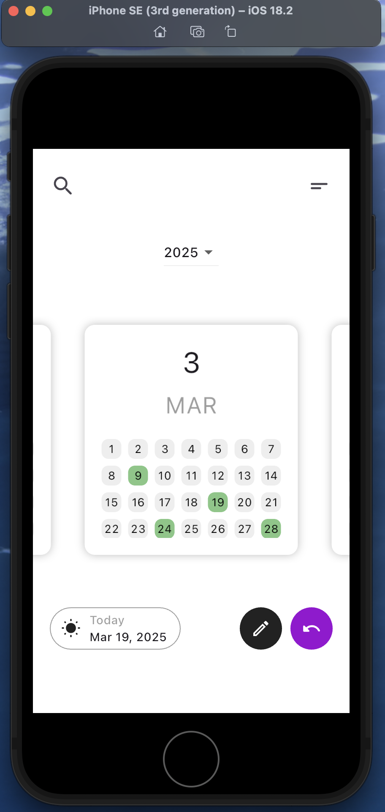
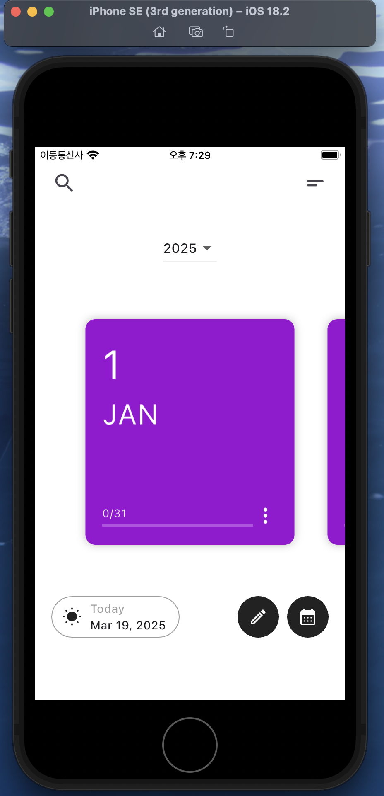
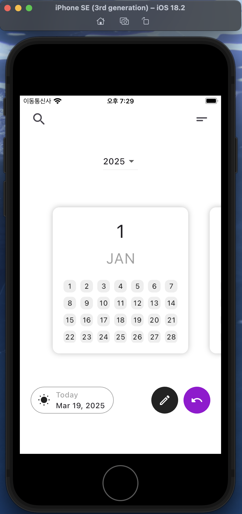
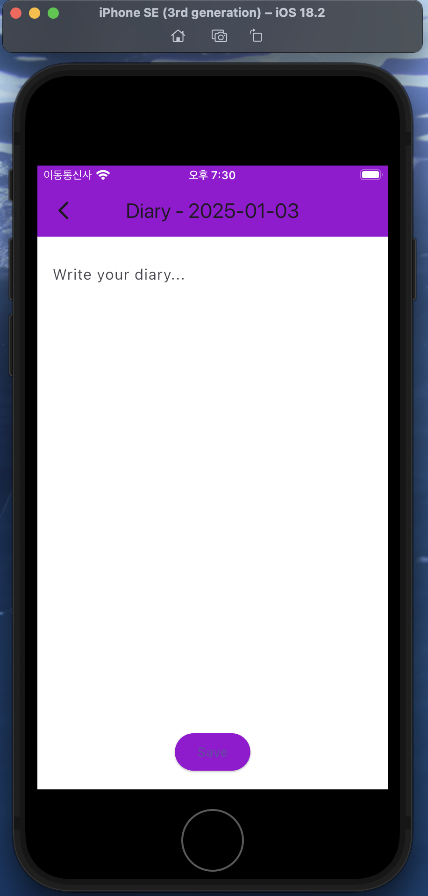

Project Overview
This Flutter-based diary app allows users to record their daily experiences, organize entries by date, and retrieve past memories effortlessly. It provides an intuitive UI, fast performance, and local database storage using SQLite.
Key Features
- Write & Manage Entries - Easily create, edit, and delete diary entries.
- Image Attachments - Attach images to enhance diary entries.
- Search Functionality - Quickly find past entries using keyword search.
- Data Persistence - Uses SQLite for secure offline storage.
- Modern Flutter UI - Smooth animations, responsive design, and customizable themes.
Why Flutter?
Flutter enables cross-platform development with a single codebase, high performance, and a rich set of UI widgets. Key advantages include:
- Fast Development - Hot reload speeds up iteration.
- Beautiful UI - Fully customizable widgets.
- Native Performance - Compiled to ARM for smooth execution.
- Cross-Platform Development - Both ios and Android support development
Database Structure
The app uses SQLite to store diary entries efficiently. Each entry contains an ID, title, content, and date. The database schema is as follows:
class DBHelper {
static Future initDb() async {
return await openDatabase(
'diary.db',
version: 1,
onCreate: (db, version) async {
await db.execute(
"CREATE TABLE diary (id INTEGER PRIMARY KEY, title TEXT, content TEXT, date TEXT)"
);
},
);
}
}
When a user saves an entry, the respective date is highlighted in green in the calendar UI.
UI Breakdown
Front View
The front view displays all diary entries and allows quick navigation.

class HomePage extends StatelessWidget {
@override
Widget build(BuildContext context) {
return Scaffold(
appBar: AppBar(title: Text("My Diary")),
body: DiaryList(),
floatingActionButton: FloatingActionButton(
child: Icon(Icons.add),
onPressed: () {
Navigator.push(context, MaterialPageRoute(builder: (context) => DiaryPage()));
},
),
);
}
}
Back View
The back view allows users to edit and manage diary entries.

class DiaryPage extends StatefulWidget {
final DiaryEntry? entry;
DiaryPage({this.entry});
@override
_DiaryPageState createState() => _DiaryPageState();
}
Diary Page
The diary page displays all entries in a scrollable list.

class DiaryList extends StatelessWidget {
@override
Widget build(BuildContext context) {
return ListView.builder(
itemCount: diaryEntries.length,
itemBuilder: (context, index) {
return ListTile(
title: Text(diaryEntries[index].title),
subtitle: Text(diaryEntries[index].date),
onTap: () {
Navigator.push(
context,
MaterialPageRoute(builder: (context) => DiaryPage(entry: diaryEntries[index])),
);
},
);
},
);
}
}
Conclusion
The Flutter Diary App is a demonstration of building a structured and efficient mobile application that balances usability, performance, and scalability. This project highlights key aspects of modern app development, including:
- State Management & Database Handling – Using SQLite and provider architecture to manage and store user data efficiently.
- Cross-Platform Development – Leveraging Flutter’s single codebase approach to create a seamless experience on both iOS and Android.
- Modern UI/UX Principles – Implementing a clean and intuitive interface with smooth animations and responsive layouts.
- Performance Optimization – Ensuring efficient data handling and smooth interactions through asynchronous programming and optimized state management.
- Scalability & Maintainability – Structuring the codebase in a way that allows for easy expansion and long-term maintenance.
Through this project, I explored how Flutter’s flexibility and efficiency enable the creation of user-friendly applications while maintaining high performance and clean architecture. By integrating data management, UI/UX design, and scalable development, this app serves as a strong foundation for future mobile application projects.
More Details & Source Code
For a deeper dive into the codebase, implementation details check out the full project on GitHub: